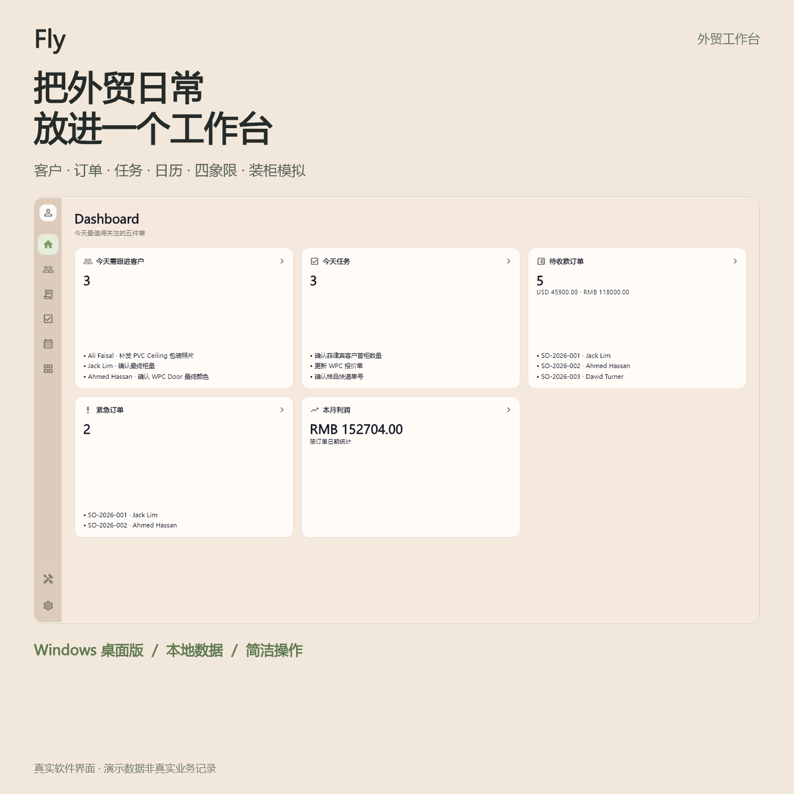
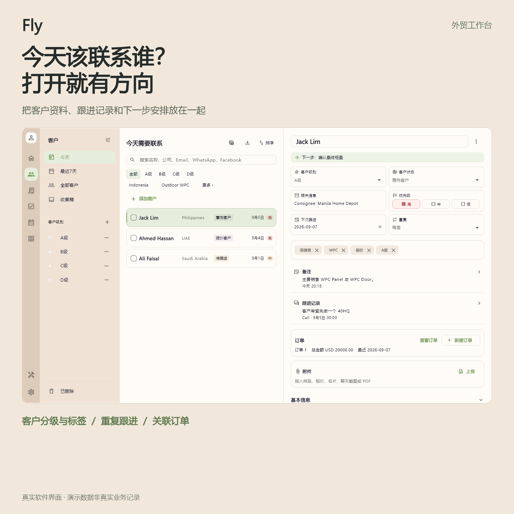
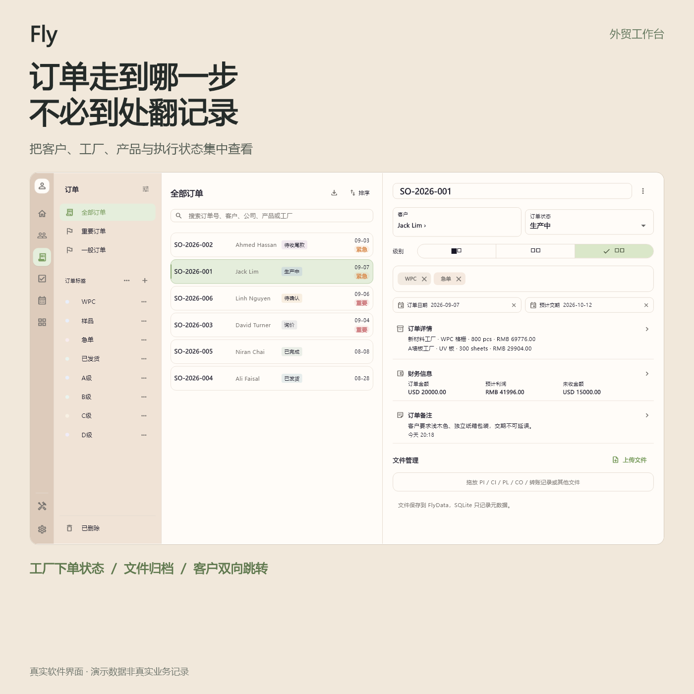
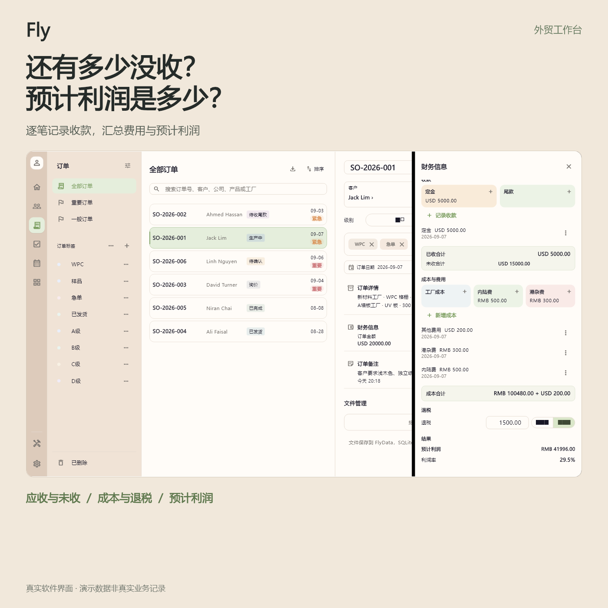
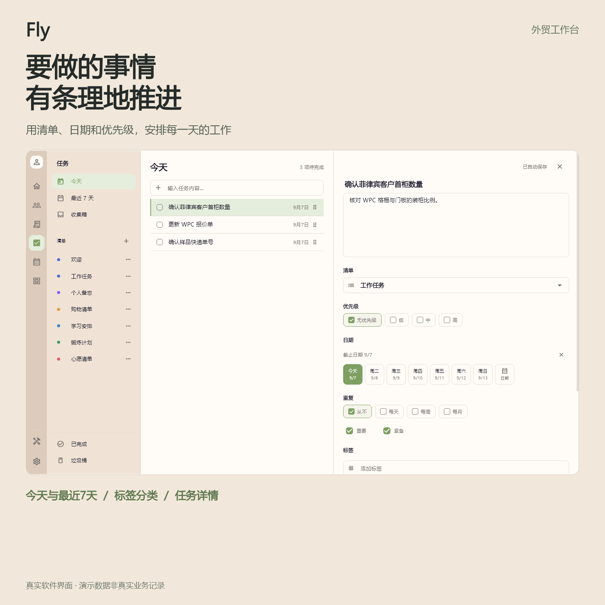
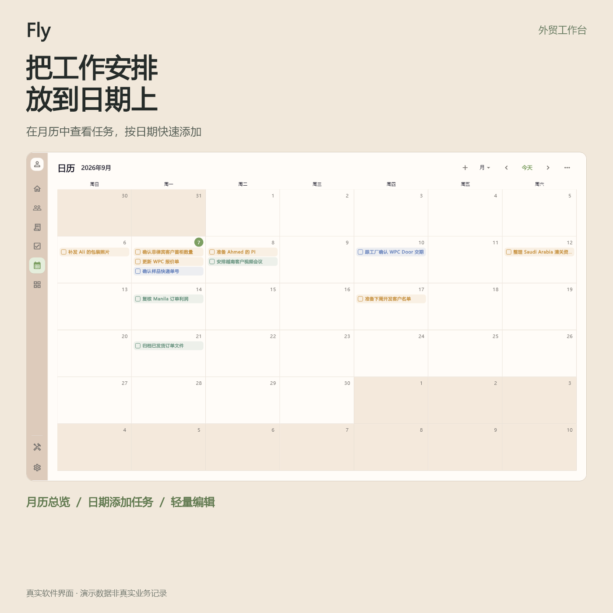
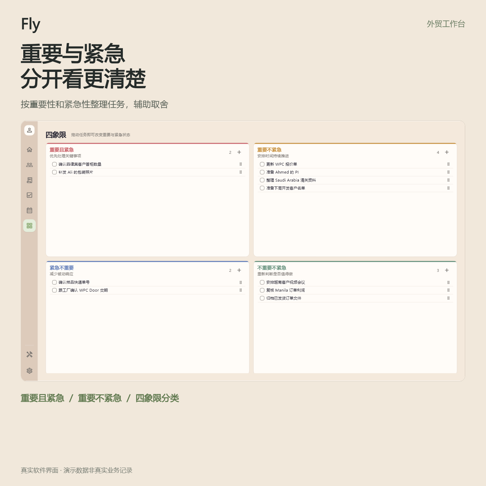
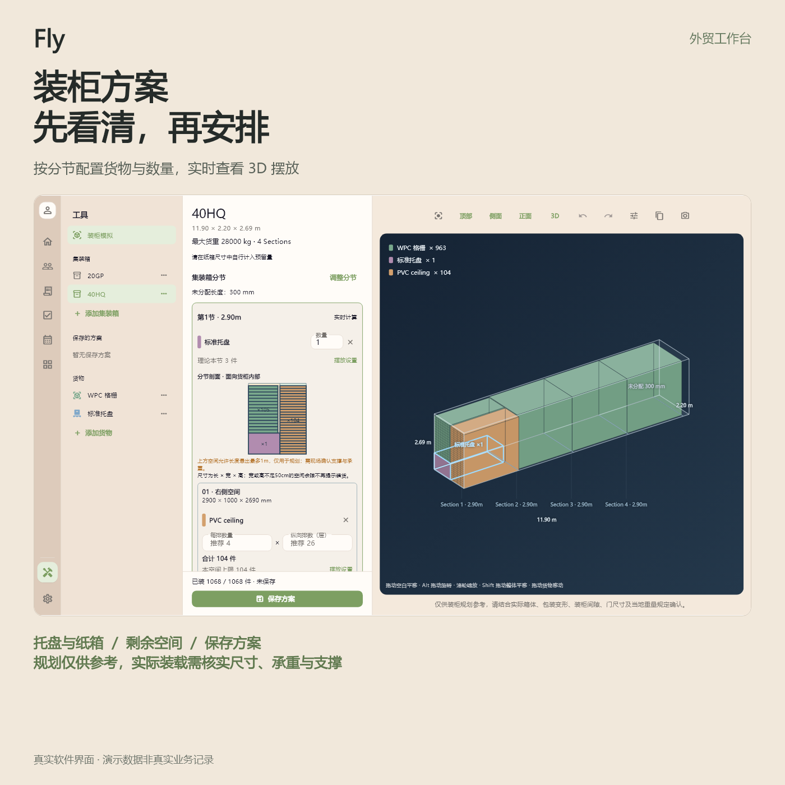

今天该联系谁，订单到哪一步，还有多少货款没收到？把相关信息放在一起，让每一次查看都有清楚的上下文。
下方图片使用演示资料，不涉及真实客户或业务数据。点击图片查看大图。

客户、订单、任务、日历、四象限与装柜规划，一处整理。

按跟进日期查看客户，记录历史沟通和下一步，关联客户订单。

集中查看客户、工厂、产品和订单状态，归档订单文件。

逐笔记录收款与成本费用，根据录入的数据汇总预计利润。

用清单、日期、标签与优先级管理待办。

在月历中查看任务，并按日期添加安排。

从重要性、紧急性两个维度梳理待办。

分节配置货物和数量，实时观察摆放与剩余空间，保存方案。
面向个人外贸业务员、SOHO 等使用场景，将自己的跟进记录、订单资料和工作安排集中整理。不是手机 App，也不包含多人实时云协作、库存或生产排程。
采用本地数据与文件存储，提供备份和恢复入口。请定期进行独立备份；本地保存不等于自动云同步或永不丢失。
预计利润依赖录入的数据与汇率；装柜模拟用于规划参考，实际装载需核实箱体、包装、门尺寸、支撑与承重。
查看完整商品文案 · 素材使用说明